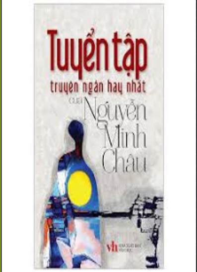

Phút 68: VÀO !!! Tận dụng việc U22 Malaysia đồn toàn lực lên, U22 Campuchia đã có bàn thăng thứ 3. Sau khi nhận được đường chuyển bên cánh phải, Keo Sokpheng đã dứt điểm nhanh, khong cho thu thanh cua U22 Malaysia co hoi can phá. Phút 57: VAO !!! Chi sau đúng 2 phút, U22 Campuchia đã có được bàn thăng thứ 2. Từ pha phan công, Sieng Chanthea đã có pha đi bong kheo leo, trưoc khi dut điem tung noc luoi U22 Malaysia o goc hep. 2-0 cho U22 Campuchia. Luc nay, hiệu số ban thang bai cua ho đa vươn len la +6. Phut 68: VAO !!! Tận dụng việc U22 Malaysia đồn toàn lực lên, U22 Campuchia đã có bàn thăng thứ 3. Sau khi nhận được đường chuyển bên cánh phải, Keo Sokpheng đã dút điểm nhanh, không cho thủ thành cua U22 Malaysia co hoi can pha. Phut 57: VAO !!! Chi sau đúng 2 phút, U22 Campuchia đã có được bàn thăng thứ 2. Từ pha phản công, Sieng Chanthea đã có pha đi bong khéo leo, trước khi dứt điểm tung nóc lưới U22 Malaysia ở góc hẹp. 2-0 cho U22 Campuchia. Lúc này, hiệu số bàn thăng bại của họ đã vươn lên là +6.
